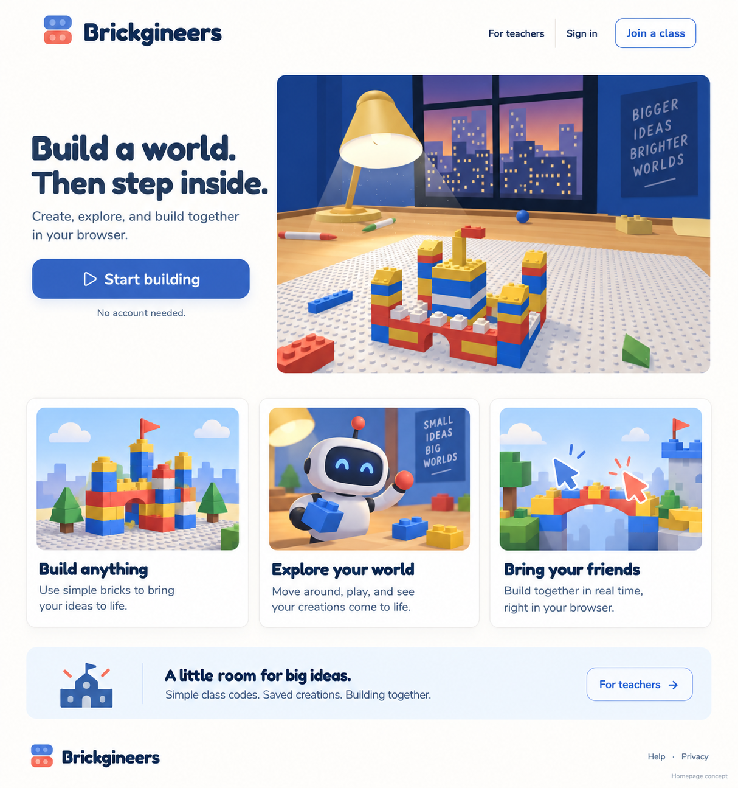
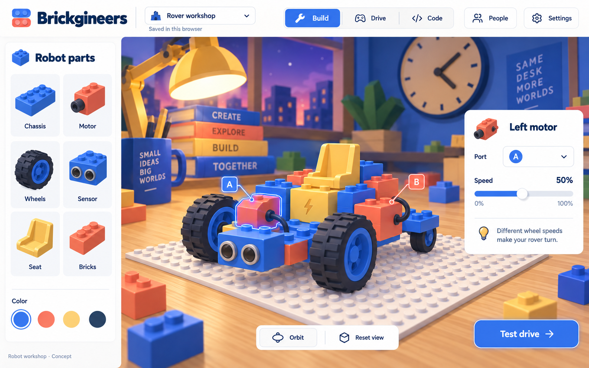
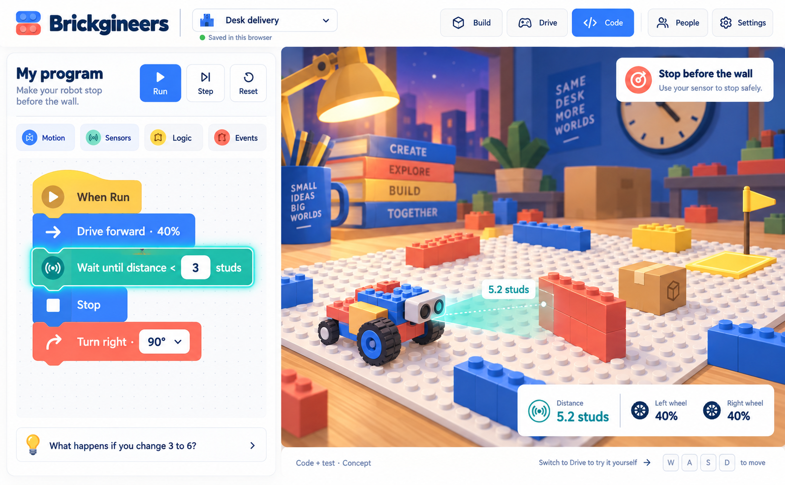

A quieter front door.
A new way to bring builds to life.
Brickgineers concept review · September 14, 2026. These are proposed designs, not released features.
01 · A simpler landing page

Keep the existing identity. Let the first screen invite students in, with supporting detail available on demand.02 · Build something you can drive

A friendly rover with functional parts and a clear Build / Drive / Code progression.03 · See what your program does

Predict, run, observe and change. The sensor beam and highlighted instruction make the connection visible.